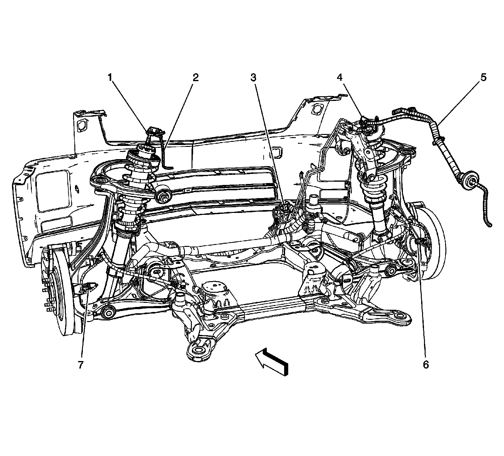
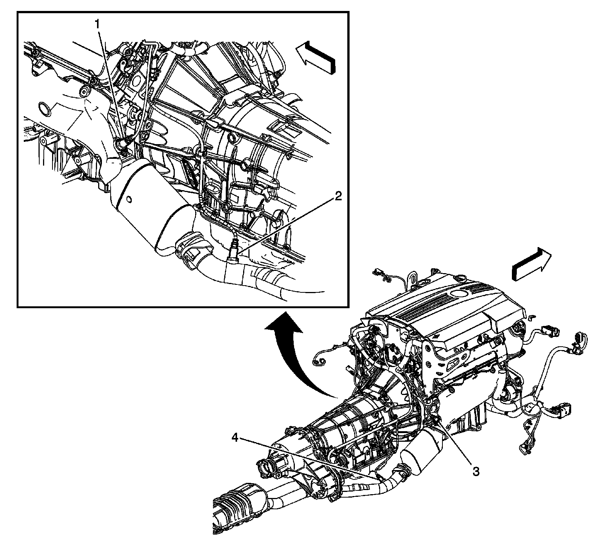
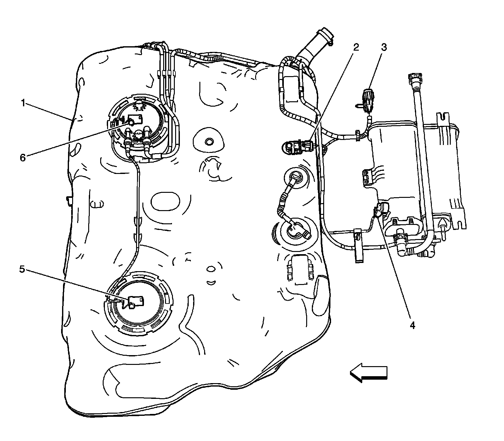

Wheels/Vehicle Underbody Component Views
Wheels/Vehicle Underbody Component Views
Front Suspension and Brake Components
Front Suspension and Brake Components:

1 - Suspension Damper - Left Front
2 - Engine Harness
3 - Electronic Brake Control Module (EBCM)
4 - Suspension Damper - Right Front
5 - Body Harness
6 - Wheel Speed Sensor (WSS) - Right Front
7 - Wheel Speed Sensor (WSS) - Left Front
Heated Oxygen Sensors (Typical)

1 - Heated Oxygen Sensor (HO2S) Bank 2 Sensor 1 (LH2 - Gas, 8 Cylinder, 4.6L, SFI, V8, DOHC, HO)
2 - Heated Oxygen Sensor (HO2S) Bank 2 Sensor 2 (LH2 - Gas, 8 Cylinder, 4.6L, SFI, V8, DOHC, HO)
3 - Heated Oxygen Sensor (HO2S) Bank 1 Sensor 1 (LH2 - Gas, 8 Cylinder, 4.6L, SFI, V8, DOHC, HO)
4 - Heated Oxygen Sensor (HO2S) Bank 1 Sensor 2 (LH2 - Gas, 8 Cylinder, 4.6L, SFI, V8, DOHC, HO)
Rear Suspension Components

1 - Suspension Damper-Left Rear
2 - Suspension Damper-Right Rear
3 - Wheel Speed Sensor (WSS) - Right Rear
4 - Automatic Level Control (ALC) Compressor (F55)
5 - Wheel Speed Sensor (WSS) - Left Rear
Left Rear Wheel Components (TR7)

1 - Headlamp Leveling Sensor - Rear (TR7)
2 - Rotor - Left Rear
Fuel Tank Components

1 - Fuel Tank
2 - Fuel Tank Pressure (FTP) Sensor
3 - X420
4 - Evaporative Emission (EVAP) Canister Vent Solenoid Valve
5 - Fuel Level Sensor - Left
6 - Fuel Pump and Sender Assembly
Tire Pressure Monitoring Components
Tire Pressure Monitoring System Component Views:

1 - Tire Pressure Monitoring Sensor - Left Front (Left Rear , Right Front , and Right Rear Similar)